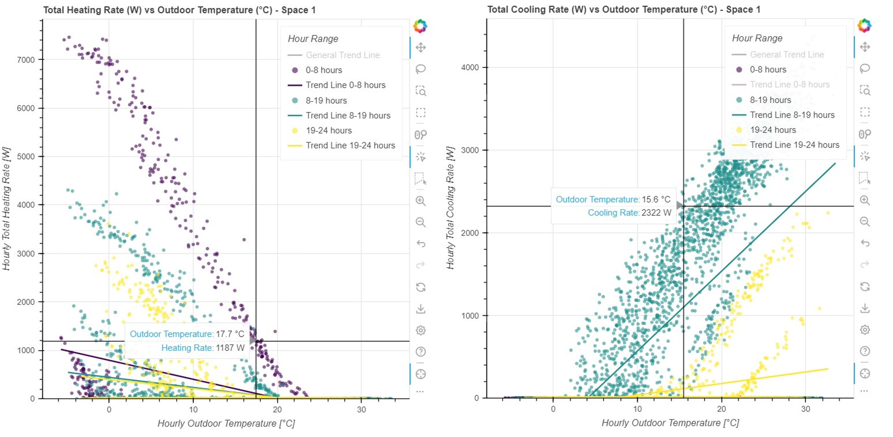

Scatter Plot - Heating & Cooling vs Outdoor Temperature
Overview
The Scatter Plot module visualizes the relationship between outdoor temperature and the building’s hourly heating and cooling ILAS rates (W/m²) for each zone.
This representation helps to:
identify system behaviour at different temperature ranges,
detect overheating/overcooling trends,
evaluate HVAC response patterns throughout the day,
compare performance during different time-of-day intervals (0–8, 8–19, 19–24),
assess linear correlations via regression trend lines.
Two side-by-side scatter plots are generated:
Heating Load vs Outdoor Temperature
Cooling Load vs Outdoor Temperature
Each includes color-coded hour ranges, optional trend lines, hover details, and automatic axis scaling.
Example Figure

Scatter Plot Module
Scatter Plot Visualization (Heating & Cooling vs Outdoor Temperature)
This module implements the scttr_plt class for generating two scatter
plots: one for heating loads, one for cooling loads, both plotted against
outdoor temperature.
- Each plot shows:
hourly values of Heating or Cooling Rate (W/m²)
points grouped by time-of-day ranges (0–8, 8–19, 19–24)
a global regression line
individual regression lines per time range
hover information
legends with interactive visibility
The two plots are displayed side by side using Bokeh’s gridplot.
Dataset Requirements
The Excel file must contain the following columns:
Outdoor_Temperature
Zone_ILAS_HeatingRate
Zone_ILAS_CoolingRate
Date/Time (string “YYYY/MM/DD HH:MM”)
Authors: Ofelia Vera-Piazzini, Massimiliano Scarpa (Università Iuav di Venezia) License: MIT
- class Visualizations.ScatterPlot.ScatterPlot.scttr_plt(source_file_pathandname='?', zone_name='?', value_max_heating='?', value_max_cooling='?', filesave_name='?')[source]
Bases:
objectCreate scatter plots of Heating/Cooling vs Outdoor Temperature.
- Parameters:
source_file_pathandname (str) – Path to the Excel file containing the required columns.
zone_name (str) – Name of the zone for use in the plot title.
value_max_heating (float) – Maximum expected heating rate, used to scale the Y axis.
value_max_cooling (float) – Maximum expected cooling rate, used to scale the Y axis.
filesave_name (str) – Base name of the output HTML file.
Generates
---------
plots (An HTML file with two Bokeh scatter) –
Heating vs Outdoor Temperature
Cooling vs Outdoor Temperature